Ảnh tour hướng dẫn giáo viên
Bản demo mô phỏng giao diện app, nội dung và style đúng với tour đang triển khai.
Tour Dashboard (3 bước)
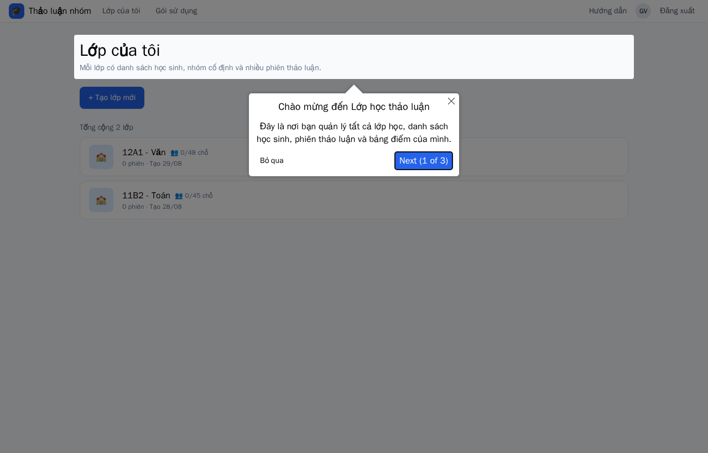
1. Chào mừng — spotlight tiêu đề
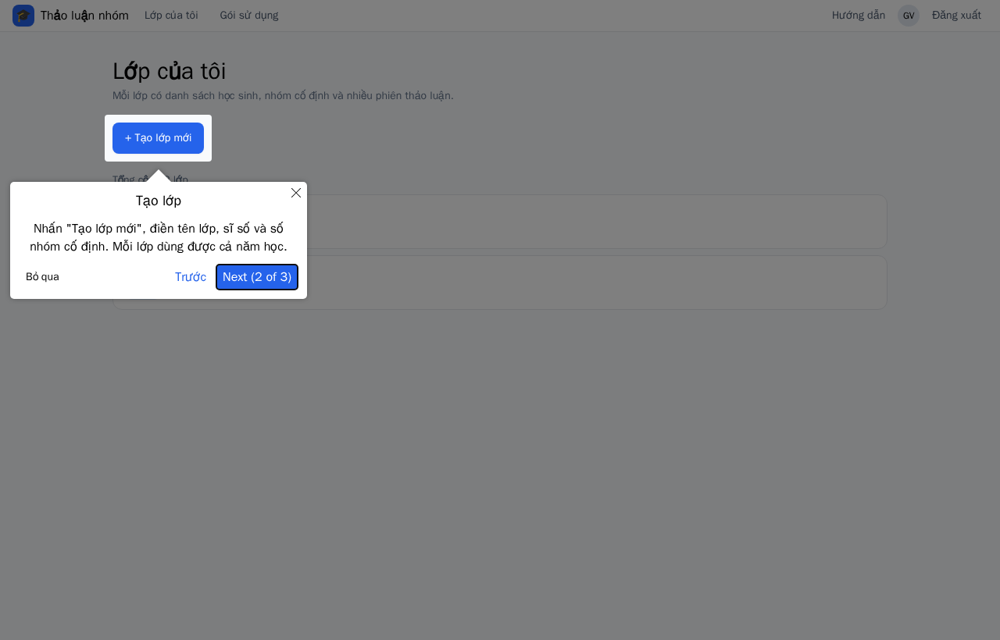
2. Nút "Tạo lớp mới"
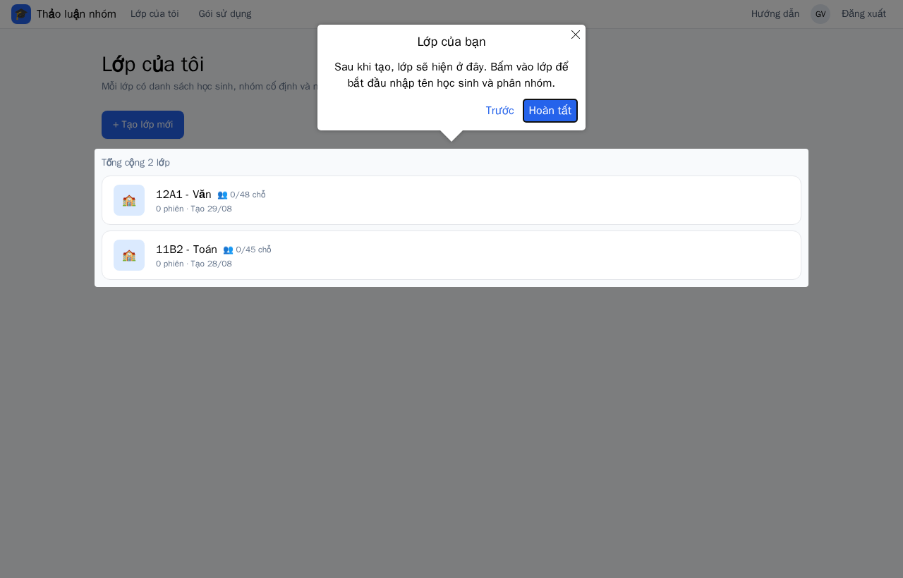
3. Danh sách lớp
Tour Danh sách & nhóm (5 bước)
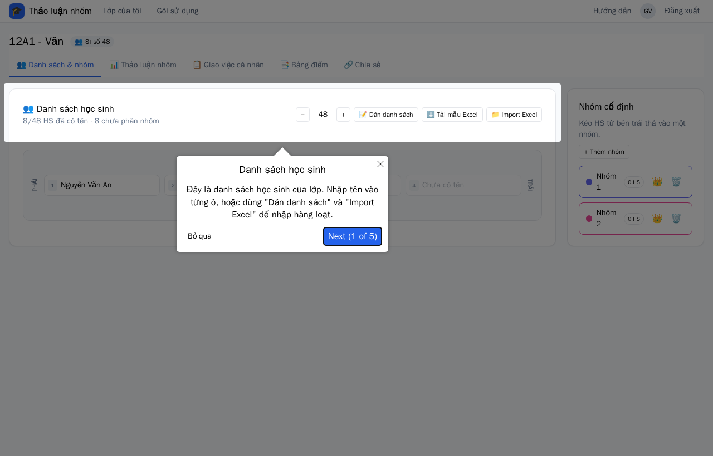
1. Khung "Danh sách học sinh"
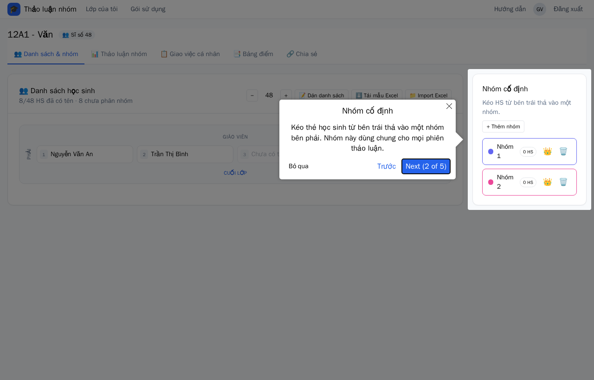
2. Cột "Nhóm cố định"
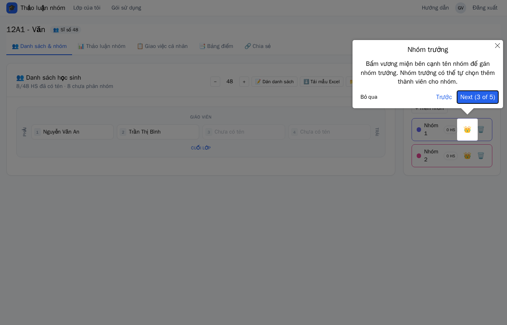
3. Nút gán nhóm trưởng
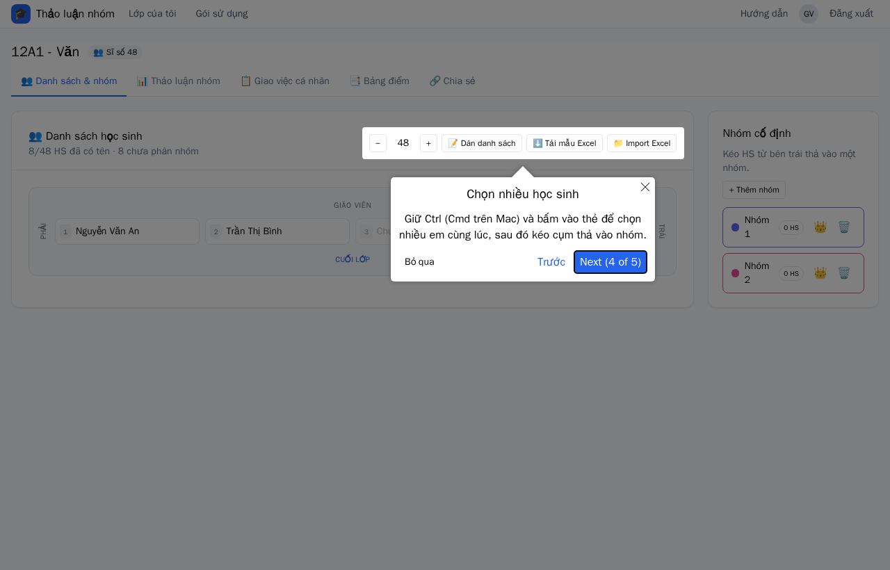
4. Chọn nhiều học sinh
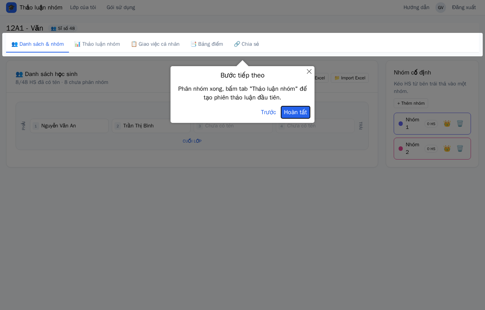
5. Thanh tabs — bước tiếp theo
Tour màn chiếu PowerPoint (4 cảnh)
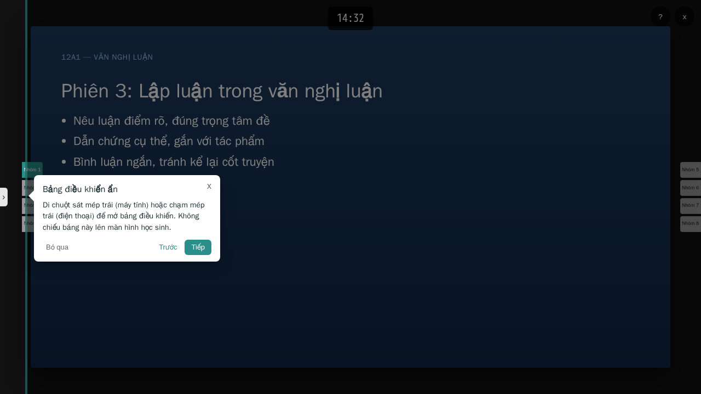
1. Mép trái — mở bảng điều khiển ẩn
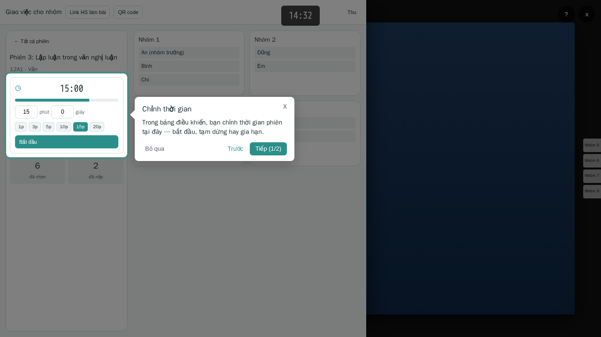
2. Drawer — chỉnh thời gian (QR trên header)
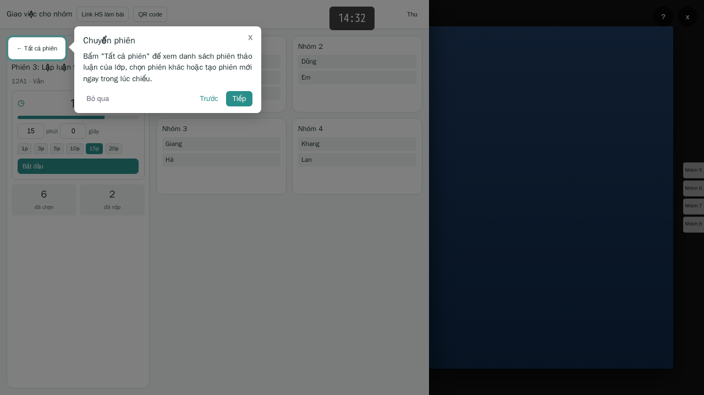
3. Tất cả phiên
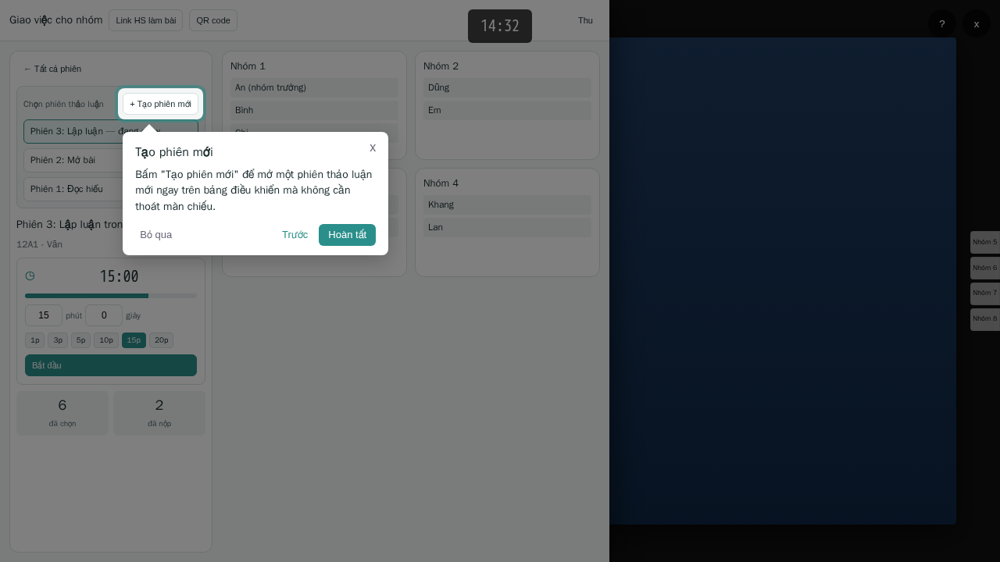
4. Tạo phiên mới